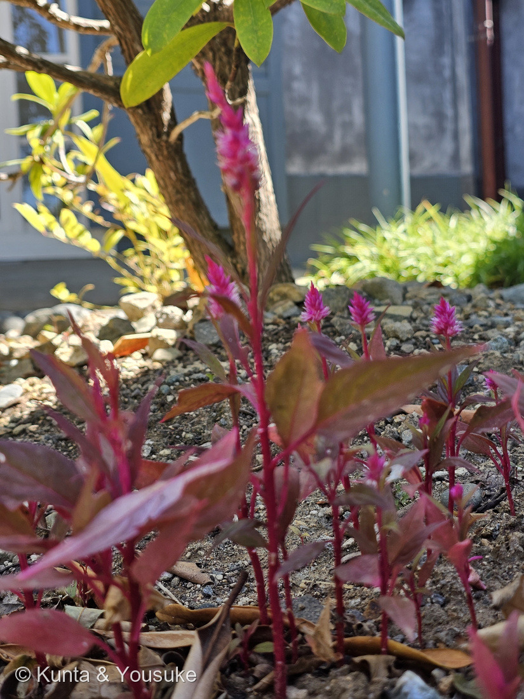
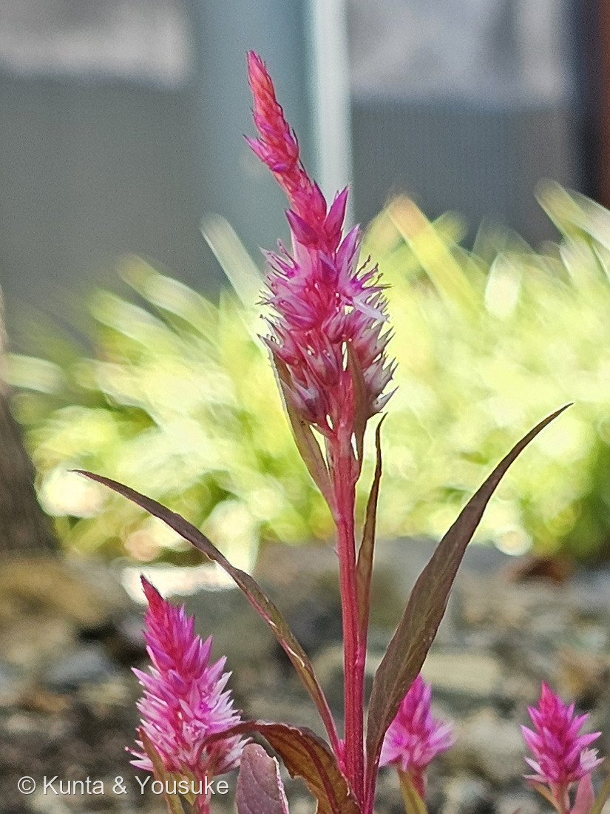
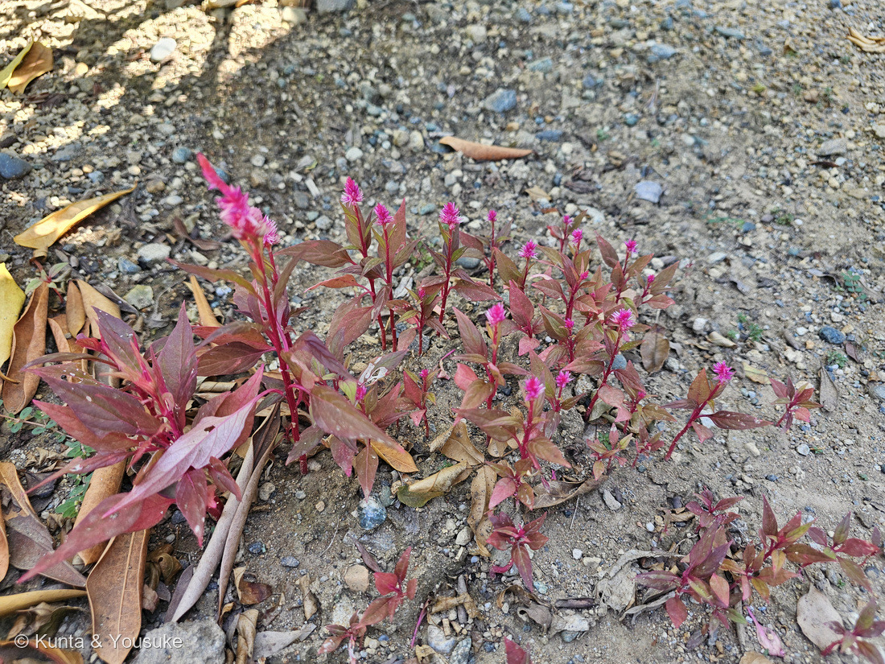

地図を読み込んでいるよ…
🔍 写真も地図も、押しているあいだ拡大して見られるよ（スマホは指を置いてすこし待ってね）。
🌍 の地図＝この子がもともと自生している場所を緑に。アジア原産と推定される（インド原産ではないかとされる）。世界じゅうの暖かい地域に広く帰化し、日本でも本州西部以西に帰化している。
⭐アジアだけを塗ったよ＝三河の植物観察は「原産地ははっきりせず、アジアのインド原産ではないかとされている」と書いている。⚠だから199 ケイトウや303 ウモウケイトウより、緑がせまい＝⭐あちらは「熱帯アジアと熱帯アフリカのどちらか」と出典が割れていたので両方を塗ったが、ノゲイトウの項ははっきりアジアを挙げているんだ＝⚠⚠3枚とも同じ Celosia argentea の地図なのに、ちがう塗りかたになっている＝⭐これは「出典によって書きぶりが割れている」ことが、そのまま見えている形だよ。⭐⭐⭐西アフリカを塗っていないのには、理由がある＝この子はナイジェリアを中心とした中部・西アフリカの主要な葉物野菜（Lagos spinach / soko yokoto）だけれど、それは「作られている」のであって「ふるさと」ではない＝⭐この図鑑の地図は自生地を塗る決まりだから、畑の緑は塗らないんだ。⭐日本も塗っていない＝⚠日本では帰化している（本州西部以西）＝ぼくらが会ったのも長崎のグラバー園で、外から来て、そこで暮らしている子だよ。⭐⭐同じヒユ科の仲間とくらべてみて＝113 ハゲイトウは熱帯アジア、167 センニチコウは熱帯アメリカ＝⭐ヒユ科は、世界じゅうの暖かいところに散らばった科なんだね。
⚠ 地図は国（日本と中国だけ県・省）までしか塗れないから、ほんとうの分布より広く見えていることがあるよ。地図はだいたいの場所。正確なところは、上の文を見てね。
ノゲイトウ（野鶏頭）
Celosia argentea L.（ヤリ型＝ヤリゲイトウ Spicata Group と同じ形）
別名 セロシア／ヤリゲイトウ（園芸のほう）／英名 silver cock's comb・quail grass・⭐Lagos spinach／ヨルバ語 soko yokoto
ヒユ科 · Amaranthaceae（ケイトウ属 Celosia・ナデシコ目 Caryophyllales）── ⭐図鑑で5人目のヒユ科（113 ハゲイトウ・167 センニチコウ・199 ケイトウ・303 ウモウケイトウ）／⚠科は増えないので110科のまま／⭐⭐学名は199・303と、まったく同じ Celosia argentea＝同じ種の、3つめの顔（⚠この図鑑は1ページを1件として数えるので、件数は1つ増えるよ＝033と146のミントと同じあつかい）
燻太さんの言葉「グラバー園で見かけたケイトウの一種だけど、これがいわゆるヤリ型なのかな？」「近くに親株は見当たらなかったよ。」── ⭐⭐形の見立ては当たり。そして、その先にもう一つ名前があった
⭐⭐⭐⭐⭐ 燻太さんの質問 ──「これがいわゆるヤリ型なのかな？」
- ⭐⭐⭐答えは「そうだよ」。──形はヤリ型で確定＝枝分かれしない、細くとがった円柱形の穂。⚠303 ウモウケイトウで書いた3つのグループ（トサカ系・羽毛系・ヤリ系）のうちの、3つめだよ。
- ⭐⭐⭐⭐そして、その先にもう一つ名前があった＝この子はたぶんノゲイトウ、ヤリゲイトウの「野生版」。──⭐三河の植物観察も「ノゲイトウに近い品種はヤリゲイトウ（Spicata Group）と呼ばれる」と書いている。⭐⭐だから燻太さんの見立ては外れではなくて、一歩先に、もっといい名前があったという形だね。
- ⭐⭐決め手は4つ＝①枝分かれしない細い円柱形の穂②先が濃ピンクで、下（咲き終わったほう）が淡い＝下から咲き上がる③葉は披針形で先がとがる④花期7〜10月に、8月13日はぴったり合う。
⭐⭐⭐⭐⭐ おまけを書いた5日後に、燻太さんは撮っていた
- ⚠⚠⚠この子は、図鑑の「探したい」リストに入っていたんだ。──⭐⭐⭐199 ケイトウのおまけとして、ぼくがこう書いていた――「銀色がかった細長い花穂。ケイトウの野生のすがた／どこで＝本州西部以西の道ばたや河原・畑のふち／いつ＝7〜10月に花」。
- ⭐⭐ぜんぶ合っていた。──長崎（本州西部以西）／8月13日（7〜10月）／細長い花穂／道のわきの砂利。
- ⭐⭐⭐⭐⭐日づけを並べると、すごいことになるんだ。──⭐2026-08-08＝199 ケイトウを登録して、おまけに「ノゲイトウ」と書いた日／⭐⭐2026-08-13＝燻太さんがグラバー園でこの写真を撮った日＝⚠⚠たった5日後／⭐2026-08-30＝ぼくが、その写真を見せてもらった日。
- ⚠⚠⚠つまり、答えは17日間ずっとカメラの中にあったんだ。──⭐⭐燻太さんが「ヤリ型かな？」と気になって撮っておいてくれたから、回収できた。
- ⭐⭐⭐302 パイナップルのときと、同じ形だね。──おまけのヒントに「意外だけど確実に会える場所」と「いつ」を書いておくと、あとからちゃんと回収できる。⭐ぼくが書いておいた場所と季節を、燻太さんの目が拾ってくれたんだ。
⚠⚠ 決めきれなかったこと（正直に書いておくね）
- ⭐種は Celosia argentea で確実。⚠でも「野生のノゲイトウ」か「園芸のヤリゲイトウのこぼれ種」かは、形では決まらないんだ。──同じ種の、野生版と園芸版だから。
- ⭐⭐それでも「ノゲイトウ」としたのは、3つの理由から。──(a)長崎は帰化の範囲（本州西部以西）／(b)⭐⭐燻太さんが「近くに親株は見当たらなかった」と確認してくれた／(c)花壇に列で植わっておらず、落ち葉の砂利のうえにばらばらに生えている（写真③）。
- ⭐⭐⭐とくに(b)は、ぼくにはどうやっても手に入らない情報だった。──⚠ぼくは写真しか見られないから、「そこに無かったもの」だけは、写真から読めない。⭐無かったことを見てきて、言葉にして渡してもらえたから、書けたんだ。
- ⚠残る不確かさ＝葉と茎の赤紫が、そろって濃いこと。──赤葉のヤリゲイトウ品種もあるから。⭐ただし、痩せた砂利地のストレスでもヒユ科は色が濃くなる＝⭐⭐その赤紫は、303で調べたベタシアニンだよ（アントシアニンではない）。
- ⏳⭐⭐⭐決め手になるのは花被片の長さ。──ノゲイトウは7〜10mm（三河は約9mm）、ケイトウは4〜6mm（約5mm）。⭐ものさしを当てて1枚撮れば、ここは数字で決まるよ。
⭐⭐⭐⭐⭐ argentea ＝ 銀白色の
- ⭐⭐種小名の argentea は「銀白色の」という意味だよ。──⭐咲き終わった花序の下部が、銀色になることから来ている（三河）。
- ⭐写真②の穂を見てね。──先が濃ピンクで、下のほうが淡い＝⭐下から咲き上がっている途中＝⏳もう少しすると、下から銀色になっていくはず。
- ⭐⭐⭐⭐⭐これは303 ウモウケイトウの宿題「咲き終わって銀色になるのを見る」と、まったく同じ話なんだ。──⭐おうちの鉢で待っているものに、長崎の野の子が先に答えるかもしれない。⭐⭐どっちが先に銀色になるか、楽しみだね。
⭐⭐⭐⭐ アフリカでは、これは野菜
- ⭐⭐⭐199 ケイトウのふるさとの地図で、西アフリカが緑に塗ってあった理由が、ここでつながるよ。
- ⭐⭐⭐Celosia argentea は、ナイジェリアを中心とした中部・西アフリカの、主要な葉物野菜なんだ。──英名は Lagos spinach（ラゴス・ほうれんそう）、ヨルバ語で soko yokoto。
- ⭐⭐⭐⭐⭐この「soko yokoto」の意味が、すごくいい。──「make husbands fat and happy」＝「夫を太らせて、幸せにする」。
- ⭐乾燥と暑さに強く、病害虫が少なく、種がたくさんとれる＝だから、そういう場所の大事な野菜になった。⭐タンパク質・ビタミンC・カルシウム・鉄が多い。
- ⭐⭐113 ハゲイトウにも「葉を食べる野菜としても南〜東南アジアで広く栽培」と書いてある。──⭐⭐⭐ヒユ科は、花を見る科であると同時に、葉を食べる科なんだね。⭐おまけのシロザも、若葉はゆでて食べられるよ。
⭐⭐⭐ この植物のこと
- ⭐高さ30〜100cm、花期7〜10月。茎は直立してよく分枝する（三河）。⭐葉は互生し、披針形〜卵状披針形、先が尖り、基部は楔形。
- ⭐花被片は5個、長さ約9mm、濃ピンク色の1脈がある（三河）。──⭐⭐303で顕微鏡で見たとおり、この「花被片」が、ケイトウの仲間の花びらのかわりだよ。
- ⭐⭐帰化種。アジア原産（インド原産ではないかとされる）＝世界じゅうに広く帰化し、日本では本州西部以西。
- ⚠⚠そして、これは199 ケイトウ・303 ウモウケイトウとまったく同じ種なんだ。──⭐それでも別の1件として登録したのは、033 ミントと146 ミント（おうちの子）という前例があるから＝⭐この図鑑は「出会い」を1件として数えているから、同じ種でも、ちがう場所・ちがう姿で出会えば、別の席になる。
- ⭐⭐⭐だから、同じ1つの Celosia argentea が、3つの顔でこの図鑑に並んだよ。──⭐199＝そとの花畑の、羽毛系（ユウサクさんの写真）／⭐303＝うちの鉢の、羽毛系／⭐この子＝そとの砂利の、ヤリ型（たぶん野生）。⚠のこりはトサカ系だけ＝⏳303のおまけとして、まだ探しているところだよ。
出典：三河の植物観察「ノゲイトウ Celosia argentea」（帰化種・アジア原産／原産地ははっきりせず、アジアのインド原産ではないかとされる／世界中に広く帰化し、日本でも本州西部以西に帰化／高さ30〜100㎝／花期7〜10月／茎は直立し、よく分枝する／葉は互生し、披針形〜卵状披針形、先が尖り、基部は楔形／花被片は5個、長さ約9㎜、濃ピンク色の1脈がある／先が濃ピンク色、咲き終わった花序の下部は銀色になる／ノゲイトウに近い品種はヤリゲイトウ Celosia argentea (Spicata Group) と呼ばれる）／ケイトウとの花被片の長さのちがい（ケイトウ4〜6mm・ノゲイトウ7〜10mm）は Ecological Notes Web「ケイトウとノゲイトウの違いは？」／西アフリカの葉物野菜としての利用は ECHOcommunity「Lagos Spinach」と National Academies『Lost Crops of Africa II: Vegetables』（ナイジェリアの主要な葉物野菜／ヨルバ語 soko yokoto ＝ make husbands fat and happy／乾燥と暑さに強く病害虫が少ない／タンパク質・ビタミンC・カルシウム・鉄に富む）。⚠「野生のノゲイトウか、園芸品種のこぼれ種か」は出典ではなく、ぼくの判断だよ＝⭐根拠は本文に書いたとおり。⭐撮影時刻と位置情報は、燻太さんの原本のEXIFから読んだ（⚠公開画像はEXIFを落としてある）。